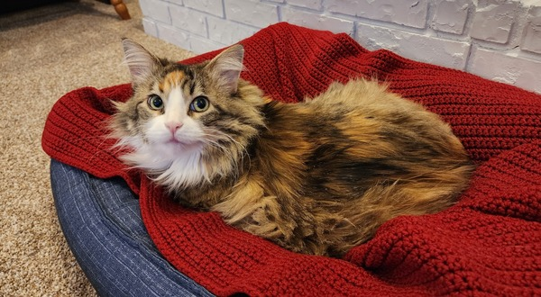
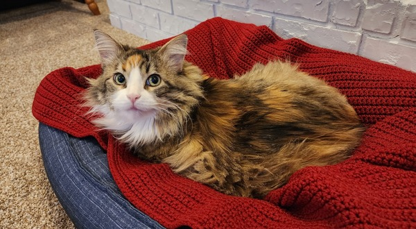

About Me
Hello, and welcome to my portfolio page! I have been a Business Analyst at Nelnet for the past three years. During this time I have gained experience creating and modifying SQL reports. I also have experience using MS Visio to create process maps, and using Excel and Access for various projects. I'm currently learning how to use MS PowerApps.
I've also begun training to move into an IT position. In November 2022 I began the Full Stack Engineer Career Path on Codecademy. I've added skills that I have acquired or will be acquiring through this course in the section below. I am planning to finish the Full Stack path by Summer 2023 and am interested in pursuing a career as a Software Engineer / Full Stack Developer.
I have a strong work ethic, strong communication skills and am very reliable. I'm visually-oriented and learn best by getting hands-on experience.
If you would like to see what I have been working on, please click the 'PROJECTS' link above. Thank you for your time and interest!
More About Me
I was born in Nebraska, but grew up in Oklahoma City and graduated from the University of Central Oklahoma. Six months later I moved to Lincoln, NE where I would eventually meet my wife. My degree is in Political Science, but I've spent most of my time working with insurance and annuities.
I love to learn and share what I know with other people. When I'm not working I spend time with my wife and play games with our kids (three daughters, one son and a cat named Ophelia). I also love watching movies and sports, reading and continuing to learn new things. Here are some of my favorites, and a picture of the family.
- Interstellar
- Groundhog Day
- Inside Out
- Rain Man
- Amadeus
MOVIES
- One Hundred Years of Solitude
- Watership Down
- To Kill a Mockingbird
- The Stand
- Love in the Time of Cholera
BOOKS
 
